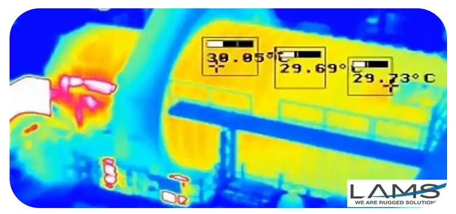
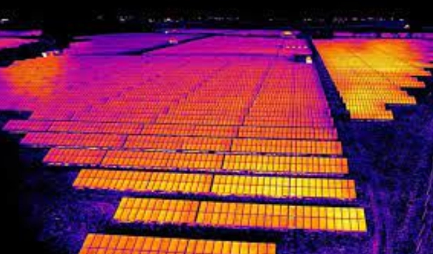
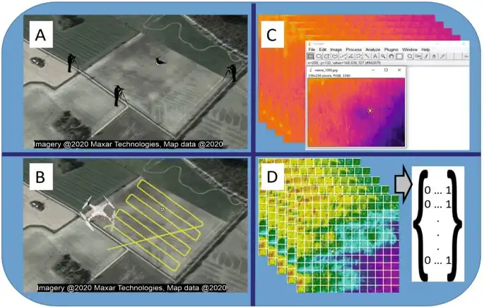

Solar plant drone thermography and inspection
In short: we carry out solar plant drone thermography and thermal surveys of substations and roofs with radiometric cameras. The report classifies each hotspot, cell, diode or string fault and tags it to its place in the plant, so the O&M team can find and fix it (what the report should include). Our thermal team includes a thermographer certified to ISO 9712 Level 2, and our power-sector clients include NTPC and Adani.
At a glance
Why plant owners inspect by drone
A solar module that is ageing normally loses output slowly. A review of nearly 2,000 measured degradation rates by researchers at the US National Renewable Energy Laboratory (NREL) found a median of 0.5 percent a year[1]. Faults behave differently. A failed bypass diode, an open string or a blown combiner fuse takes a fixed share of generation offline at once and keeps it offline until someone finds it. On a large plant, monitoring at inverter level may show this only as a small dip in a large total, without saying which string or module is at fault.
How large the losses are
Raptor Maps, a solar inspection software company, publishes an annual Global Solar Report from the inspection data on its platform. Its 2026 report, which covers 2025, puts the average equipment-driven power loss across the sites in its data set at 5.08 percent[2]. PV Tech's coverage of the report notes that this is more than double the 2.36 percent recorded in 2021[3]. For a site at that average, the report estimates up to US$5,070 per MW of annual revenue at risk[2].
The same report shows where the loss sits. String faults account for 26.89 percent of the observed equipment-driven loss and combiner faults for 21.51 percent; tracker faults contribute nearly 14 percent, and inverters now account for less than a quarter[2]. String and combiner faults are among the clearest findings of a thermal flight, because a string that is not exporting runs warmer than the strings beside it.
Two cautions apply. The report gives no figures for India, so its numbers show the scale of the problem rather than predict the loss at any one plant. And revenue lost per MW depends on the tariff, so a dollar figure from other markets does not translate directly to an Indian plant.
A small share of faults causes most of the loss
Raptor Maps' 2025 report found that issues classed as high priority were responsible for about 90 percent of the observed loss, although they were a minority of all the issues found[4]. An inspection is therefore only as useful as its ranking: the O&M team needs to fix the costly faults first, not work through a list in the order it was recorded.
Some faults are a safety risk, not only a yield loss
The International Energy Agency's PV Power Systems programme (IEA PVPS) Task 13 review of module failures notes that a defective bypass diode or cell interconnect ribbon may possibly lead to a fire, and that hot spots can reach temperature differences of multiples of 10 K above the normal parts of the module[5]. It lists junction box failure among the most common failures seen in the field[5]. Task 13's later review of infrared and electroluminescence imaging adds that hot spots with strong local heat gradients can significantly affect module performance and, in extreme cases, lead to smouldering fires[6].
Why a drone rather than a handheld camera
A drone views the plant from above, within the viewing angles IEC TS 62446-3 allows, and records a radiometric image of every module in one consistent set that can be compared with the next survey. With a handheld camera, a person on foot has to walk every row and hold the camera at a usable angle to each module.
Handheld thermography works, but a plant can have tens of thousands of modules. The IEA PVPS review describes aerial infrared thermography as a cost-effective and much less time-consuming option for fault diagnosis[6]. For a side-by-side comparison of time, cost and what each method finds, see drone vs manual solar panel inspection.
Each report lists every defect with its class and its position on the plant layout, with the thermal and visual images and the temperature difference to healthy modules, and a summary by block or inverter so repairs can be planned. See what a solar thermography report should include.

When to inspect
Inspect a solar plant at commissioning or handover, in routine O&M cycles, after storms or a drop in performance, and before a warranty claim. The survey records the condition of every module, tracks changes over time, finds new faults, checks that earlier repairs worked and documents each defect for a warranty claim.
- At commissioning or handover, to record the condition of every module before the plant changes hands or the warranty period runs on.
- In routine O&M cycles, to track changes over time, find new faults and check that earlier repairs worked.
- After storms or a drop in performance, when hail, wind or an unexplained fall in yield points to damage that needs locating.
- Before a warranty claim, so each defect is documented with its class, its position and radiometric images.
Thermography is an O&M survey. Before construction, see our guide to topographic surveys for solar plants.

Radiometric thermal and visual imaging
We use radiometric thermal cameras that record thermal images and video with a temperature value for every pixel, at centimetre-level detail. On a solar plant the inspection covers every module and string, from single cells up to whole blocks, and we support your O&M team through interpretation of the results.
With radiometric thermal imaging, a drone survey finds faults at cell level within a panel, panel level within a sub-array and array level within a block, faster and more safely than manual inspection. See our guide to solar thermography reports.
The ability to detect and diagnose issues with such precision enables maintenance teams to promptly enhance energy output and prevent further damage. By swiftly identifying performance faults, teams can take proactive measures to mitigate potential losses and ensure optimal operational efficiency of solar installations.
To facilitate the identification of performing panels or sub-arrays, we offer raw thermal radiometric imagery for processing. Alternatively, our expert team can handle the thermal data analysis, producing detailed hotspot reports integrated with GPS data. This comprehensive approach ensures that our clients receive actionable insights tailored to their specific needs, supporting informed decision-making and proactive maintenance strategies.

How we inspect a solar plant
We fly to the conditions and requirements of IEC TS 62446-3, the technical specification for outdoor infrared thermography of PV modules and plants. A thermal image taken outside these conditions can hide faults or show faults that are not there.
- Site assessment and flight plan. We agree the requirements with the plant team, assess the site for areas of interest, risks and safety needs, and plan the flights for weather, flight height and coverage.
- Plant running, conditions stable. The plant is in normal operation and the flight is made in clear, steady sunlight, because a fault only shows as heat when the modules are producing power.
- Irradiance of at least 600 W/m². Irradiance in the plane of the modules is checked before and during the flight. If it drops below the minimum, flying stops until it recovers.
- Wind and cloud within limits. Cloud cover of no more than 2 okta (2/8 of the sky) and wind of no more than 4 Beaufort (about 28 km/h), so that passing shadows and wind cooling do not mask or mimic faults.
- Resolution of about 3 cm per pixel. The flight height is set so that each thermal pixel covers about 3 cm of the module, which puts roughly five pixels across each cell.
- Viewing angle above 30° to the module plane. At shallower angles the glass reflects the sky and the sun, and the temperature reading is no longer reliable.
- Radiometric camera. Every pixel carries a temperature value, so each anomaly can be measured against healthy modules and compared from one year to the next.
- Certified personnel. IEC TS 62446-3 expects the thermographer to hold a recognised certification. Our thermal team includes a thermographer certified to ISO 9712 Level 2.
- Processing and analysis. After the flight, our team processes the raw thermal data into thermal maps and analyses them for hotspots and other anomalies. Each one is classified and tagged to its place in the plant for the report.



Solar plant defects a thermal inspection finds
Each fault has its own thermal pattern. The table shows the common ones, what usually causes them and what is usually done about them.
| Defect | How it looks in the thermal image | Likely cause | Usual action | Priority |
|---|---|---|---|---|
| Single-cell hotspot | One cell clearly warmer than the cells around it | Cracked or damaged cell, local shading or dirt | Check the visual image; clean, or replace the module if the hotspot persists | Medium; high if very hot |
| Bypass diode (hot substring) | One third of the module evenly warmer than the rest | Bypass diode active or failed | Replace the diode or the module; check for a shorted diode | High |
| String off | A full string of modules warmer than the strings next to it | Blown fuse, open connector or other string fault | Check the fuse and connections at the combiner box | High |
| PID or patchwork heating | Several warm cells in an irregular, patchwork pattern | Cell degradation, potential-induced degradation (PID) | Group the affected modules by string and inverter; investigate PID | Medium |
| Soiling and shading | Irregular warm areas with soft edges | Dust, bird droppings, vegetation, nearby structures | Clean, trim, or plan around fixed shade | Low to medium |
| Junction box or connector | A small, very hot point at the junction box or cable | Loose, corroded or poorly crimped connection | Repair promptly; it can be a fire risk | High |
What the inspection covers, and what a drone thermal survey does not replace
A drone thermal survey is a screening method for faults that make heat. It is one part of a plant's testing and maintenance regime, not the whole of it. The lists below describe general industry practice, not the scope of any one contract.
What a thermal flight covers
A thermal flight screens every module in the area flown for faults that make heat: hot cells and hotspots, strings that are not exporting, active or failed bypass diodes, overheating junction boxes and connectors, and soiling and shading. The RGB image taken with each thermal image shows broken glass, frame damage, debris and vegetation at the same position.
- Modules. Hot cells and hotspots, broken glass once it causes heating, and the patchwork heating typical of potential-induced degradation (PID), on every module in the area flown.
- Strings. Whole strings that are not exporting, which run warmer than the strings beside them and usually point to a blown fuse or an open connector at the combiner box.
- Bypass diodes. A substring, typically one third of the module, running evenly warmer than the rest when its diode is active or has failed.
- Junction boxes and connectors. Overheating that shows through the module at the junction box position, or on cables and connectors visible from above.
- Soiling and shading. Soft-edged warm patches from dust, bird droppings, vegetation and fixed shade, so cleaning and trimming can be planned.
- Visual condition. The RGB image taken with the thermal image shows broken glass, frame damage, debris and vegetation at the same position.
What a drone thermal survey does not replace
- Electrical tests. IEC 62446-1 sets Category 1 tests for all grid-connected PV systems, including earth continuity, polarity, string open-circuit voltage and current, functional and insulation resistance tests[7]. A thermal image measures none of these.
- I-V curve tracing. IEC 62446-1 lists the I-V curve test and infrared inspection as separate Category 2 tests[7]. Thermography shows that a string is likely losing power; an I-V curve trace measures how much.
- Electroluminescence (EL) imaging. EL shows micro-cracks and other defects within the cell material[6], including cracks that do not yet cut a cell off or make heat.
- Inverter internals and enclosed equipment. A drone sees the outside of an inverter, combiner box or transformer. The components inside need their own inspection and maintenance on the ground.
- Confirming the cause. A thermal anomaly tells the ground team where to look. Confirming the cause, for example whether a diode is shorted or open, needs a check at the module.
A good inspection plan uses the drone to find and map every fault that makes heat, then sends the ground team only where the drone points. Read the full comparison in drone vs manual solar panel inspection.
Sources
- D. C. Jordan and S. R. Kurtz (NREL), Photovoltaic degradation rates: an analytical review, Progress in Photovoltaics, vol. 21, 2013. research-hub.nrel.gov
- Raptor Maps, Global Solar Report 2026 (2025 data). pages.raptormaps.com
- PV Tech, PV project power loss doubled in last five years: Raptor Maps. www.pv-tech.org
- Raptor Maps, Global Solar Report 2025 (2024 data). pages.raptormaps.com
- IEA PVPS Task 13, Review of failures of photovoltaic modules, Report IEA-PVPS T13-01:2014. iea-pvps.org
- IEA PVPS Task 13, Review on infrared and electroluminescence imaging for PV field applications, Report IEA-PVPS T13-10:2018. iea-pvps.org
- Hioki, Maintenance of solar PV systems according to the IEC 62446-1 standard (test categories). www.hioki.com
Our Features
Fast Data Delivery
Our dedicated team of GIS experts works tirelessly to swiftly process and analyze drone survey data, ensuring prompt delivery, often ahead of schedule.
Certified Thermographer
Our thermal team includes a thermographer certified to ISO 9712 Level 2, as IEC TS 62446-3 expects for PV plant thermography.

Team of Experts
Our GIS engineers, drone pilots and software engineers work in shifts so survey data is processed without delay.
Advanced Equipment
We fly DJI drones and our own custom-built drones with high-resolution survey sensors.
Frequently asked questions
What is a drone thermal survey?
A drone thermal survey uses an infrared camera on a drone to measure surface temperature across a site. Faults that change temperature, such as failing solar cells, loose electrical joints or water ingress, become visible in the thermal image.
When should a solar thermal inspection be flown?
In clear, steady sunlight with the plant operating, usually around midday. The widely used standard for aerial thermography of PV plants, IEC TS 62446-3, sets a minimum irradiance of 600 W/m² on the modules.
What defects can thermal drones find in a solar plant?
Hot spots and cell cracks, bypass diode faults, open or disconnected strings, junction box overheating, potential induced degradation patterns, and soiling or shading.
What is the difference between radiometric and non-radiometric thermal cameras?
A radiometric camera records a temperature value for every pixel, so each defect can be measured and compared. A non-radiometric camera only shows relative hot and cold areas. Inspection reports need radiometric data.
What does a solar thermography report include?
Each defect with its class, its position on the plant layout, the thermal and visual images, and the temperature difference to healthy modules, with a summary by block or inverter so repairs can be planned.
Does the plant need to shut down for a drone thermal inspection?
No. The plant must be running, because a fault only shows as heat when the modules are producing power. The flight is made during normal operation, in steady sunlight, and is coordinated with the plant team so that no blocks are switched off or curtailed.
Is a drone thermal inspection compliant with IEC TS 62446-3?
Only if it meets the standard's conditions, resolution, personnel and reporting requirements; a drone does not make an inspection compliant by itself. The conditions include irradiance of at least 600 W/m² on the modules, cloud cover of no more than 2 okta, wind of no more than 4 Beaufort and a resolution of about 3 cm per pixel, and the thermographer should hold a recognised certification such as ISO 9712.
What can a drone thermal inspection not find?
Cell cracks that have not yet cut a cell off, which electroluminescence (EL) imaging shows; the exact power a string is losing, which an IV-curve trace measures; and faults inside combiner boxes and inverters, which need a physical check on the ground.
How does a drone thermal inspection differ for rooftop and ground-mounted plants?
The flight conditions are the same, but the site is not. On a rooftop the flight has to be planned around the building, its occupants, nearby structures and local airspace rules, and the modules often sit at a low tilt close to roof equipment that can give off heat or cast shade. Rooftop arrays are smaller, so they can usually be covered in a short flight. Ground-mounted plants are larger and open, so the work is planned block by block, and access, dust and vegetation between rows matter more.
Can plants with single-axis trackers be inspected by drone?
Yes. The modules change angle through the day, so the flight is planned around the tracker position: the camera must view the modules at more than 30° to their plane, and the sun's reflection moves as the trackers turn. A row stuck at the wrong angle or left in stow is itself a fault worth recording. Raptor Maps' 2026 Global Solar Report found that tracker faults contributed nearly 14 percent of the equipment-driven loss in its data set.
How soon after commissioning should a solar plant be inspected?
As soon as it is exporting at normal load in steady sunlight, because thermography needs current flowing through the modules to show faults. A baseline survey at commissioning or handover, while the EPC contractor is still responsible for defects, records the faults present from the start so they can be raised with the contractor or the module supplier.
What weather cancels or pauses a solar thermal flight?
Anything that takes the plant outside the conditions of IEC TS 62446-3: irradiance below 600 W/m² on the modules, cloud cover above 2 okta or wind above 4 Beaufort. Rain or wet modules, heavy haze or dust that cuts the sunlight, and passing cloud that makes irradiance change quickly also stop useful work, because a module takes several minutes to settle to a new temperature after the light changes. In India the monsoon leaves fewer usable days, so flights are planned for clearer seasons or for clear spells between rain.
What does the O&M team receive after the inspection?
In general, a list of anomalies they can work from: each one with its class, its place in the plant, the thermal and visual images, the temperature difference to healthy modules and a priority, with a summary by block or inverter. A plant map with the anomalies marked helps crews find each one on the ground. The raw radiometric images can also be handed over, so the plant's own team or a third party can analyse them again.
How are anomalies from a solar thermal inspection prioritised?
By what they risk and what they cost. Hot points at junction boxes, connectors and cables come first, because they can be a fire risk. Faults that take a large share of generation offline, such as strings that are not exporting or failed bypass diodes, come next. Single-cell hotspots, PID patterns and soiling are ranked by their temperature difference to healthy modules, since a large temperature difference usually means a large power loss, and by how many modules are affected. Raptor Maps' 2025 Global Solar Report found that high-priority issues caused about 90 percent of the observed loss, so the ranking matters more than the length of the list.
How often should a solar plant be inspected by drone?
At least once a year as part of routine O&M, plus a baseline at commissioning or handover, a survey after hail, high winds or an unexplained drop in yield, and one before a warranty claim. Older plants, plants with a history of faults and plants in hot, dusty climates gain from more frequent surveys, because comparing radiometric data from one survey to the next shows faults that are spreading.
Do the modules need to be cleaned before a thermal flight?
No, but it helps to know when they were last cleaned. Soiling shows in the thermal image as soft-edged warm areas, and heavy soiling can hide other faults beneath it. Flying soon after a cleaning cycle makes it easier to tell soiling apart from defects; flying before cleaning shows where soiling is costing the most.